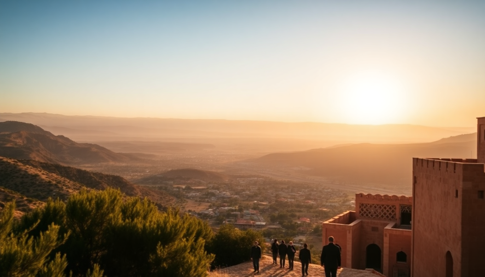

Best Day Trips from Fes: Meknes, Volubilis & Middle Atlas

I’d been in Fes for three days, and the medina was starting to feel like a washing machine I couldn’t get out of. So I rented a car from the airport and pointed it west. Within an hour I was standing in a Roman basilica with no crowds, eating olives in a quiet Meknes square, and later watching Barbary apes in a cedar forest. Here’s exactly how to do those three day trips from Fes — including the one you can actually do in a single morning.
Is Meknes worth the drive from Fes?
Yes, but only if you skip the tourist buses. Meknes is often called the “forgotten imperial city,” and that’s its biggest asset. We drove in on a Tuesday morning and had the massive Bab Mansour gate almost to ourselves. The vibe is more working-class than Marrakech or Fes, which means less hassle and better prices.
What to do in Meknes on a half-day trip:
- Bab Mansour — the most ornate gate in Morocco. The tile work is better than anything in Fes, and it’s free to photograph from the plaza.
- Mausoleum of Moulay Ismail — only Muslims can enter the inner chamber, but you can see the courtyard and the stables. Non-Muslims are welcome to the outer sections.
- Heri es-Souani — the royal granaries and stables. Huge, empty, and eerie. Bring a flashlight because the underground chambers are pitch black.
- Place el-Hedim — the main square. Less chaotic than Jemaa el-Fna. We had mint tea at Café Bab Mansour on the corner; the terrace gives you a direct view of the gate.
Skip the Meknes medina unless you need a specific carpet. It’s smaller and less atmospheric than Fes, and the touts are just aggressive enough to be annoying.
How do you visit Volubilis without a tour bus?
Volubilis is the main reason most people do this day trip. It’s a UNESCO Roman ruins site about 30 minutes north of Meknes. The trick is to go early — we arrived at 8:30 AM and had the entire House of Dionysus mosaic to ourselves for twenty minutes.
Practical tips for Volubilis:
- Entry fee — 70 dirhams (about $7). Cash only. There’s an ATM in Meknes but not at the site.
- Guide or no guide — you can skip the official guide if you download the free Rick Steves audio tour beforehand. The signage is minimal, and the audio fills in the gaps.
- Best mosaics — the Labors of Hercules and the Charioteer of Carthage are the showstoppers. Both are in the open-air ruins, so morning light is better for photos.
- The climb — there’s a hill behind the basilica that gives you a full panorama of the site. It’s a five-minute scramble, and worth it.
- Toilet situation — one squat toilet near the entrance. Bring your own hand sanitizer and tissues.
We spent two hours at Volubilis and felt that was enough. You can combine it with Moulay Idriss Zerhoun, the hilltop holy town visible from the ruins, but we skipped it because non-Muslims can’t enter the main shrine anyway.
Can you see the Middle Atlas mountains in one day from Fes?
Yes, and it’s actually the most relaxing of the three options. The Middle Atlas day trip is less about monuments and more about air you can actually breathe. We drove south from Fes toward Ifrane, which Moroccans call “Little Switzerland” because of the alpine-style chalets and the fact that it snows here in winter.
The Middle Atlas loop we took:
- Ifrane (1 hour from Fes) — clean, quiet, and bizarre. The town has a fake Swiss vibe, but the Al Akhawayn University campus is worth a walk-through. We had lunch at Le Chalet de la Forêt, which serves decent tagine and has a fireplace.
- Cedar forest near Azrou (20 minutes south of Ifrane) — this is where the Barbary macaques hang out. Pull over at the designated parking area. The monkeys are wild, but they’re used to people. Don’t feed them — they bite.
- Azrou town — a quick stop for the Berber carpet co-op if you’re shopping. Prices are lower than Fes, and the pressure is lower too. We bought a small runner for 200 dirhams.
- Dayet Aoua lake (optional) — a seasonal lake about 15 minutes east of Ifrane. If it’s dry (summer), skip it. In spring, it’s a good picnic spot.
The whole loop takes about 5-6 hours including stops. We drove it in a small Renault Clio and had no issues. The roads are paved and well-maintained.
What’s the best way to get around — rental car, taxi, or tour?
I’ll be straight with you: a rental car is the best option if you’re comfortable driving in Morocco. The roads from Fes to Meknes and Volubilis are good, and the Middle Atlas route is easy. We rented from Avis at Fes–Saïss Airport for about 300 dirhams per day including insurance.
Other transport options:
- Grand taxi — you can hire one from the Bab Boujloud area in Fes for a full day. Expect to pay 600-800 dirhams for Meknes and Volubilis. Negotiate hard.
- Organized tour — GetYourGuide and local agencies run group trips. The downside is you’ll be on their schedule. We saw a group at Volubilis that was rushed through in 45 minutes.
- CTM bus — works for Meknes (20 dirhams, 1 hour), but you’ll need a taxi to reach Volubilis from the bus station. Not worth the hassle for a day trip.
Driving tip: watch for speed bumps in villages. They’re unmarked and can be brutal. Also, fill up gas in Fes before leaving — stations are sparse on the Meknes-Volubilis road.
When is the best time of year for these day trips?
Spring (March to May) and fall (September to November) are ideal. We went in late April and the temperature at Volubilis was perfect — 22°C with a light breeze. The Middle Atlas was cooler, around 15°C, which was fine with a jacket.
Seasonal notes:
- Summer (June-August) — Volubilis gets brutally hot by 11 AM. Go at opening time (8:30 AM) or skip it. The Middle Atlas is still pleasant at higher elevations.
- Winter (December-February) — Ifrane and Azrou can get snow. The cedar forest is beautiful in snow, but roads can be icy. Check conditions before driving.
- Ramadan — everything operates on reduced hours. Meknes’ restaurants may be closed during the day. Plan for picnic lunches.
Where should you eat on these day trips?
We made the mistake of eating at a tourist restaurant near Volubilis on our first attempt. Overpriced couscous and a cat stealing bread from the table. Second time, we did better.
Our actual meal stops:
- Meknes — Restaurant Ouliya near Place el-Hedim. Good pastilla (chicken pie with cinnamon) for 50 dirhams. No English menu, so point at what others are eating.
- Volubilis area — Café-Restaurant Volubilis just outside the entrance. It’s the only option, but the olive salad and grilled chicken are fine. Stick to bottled water.
- Ifrane — Pizzeria Le Flore for a break from tagine. The pizza is decent and the Wi-Fi is fast.
- Azrou — street stalls near the monkey parking area sell roasted almonds and fresh orange juice. 10 dirhams for a glass.
FAQ
How far is Meknes from Fes, and how long does the drive take? Meknes is about 60 kilometers southwest of Fes. The drive takes 50 minutes to an hour on the A2 highway. Traffic is light except near the Fes city limits. Tolls cost about 15 dirhams each way.
Can you do Volubilis and Meknes in one day from Fes? Yes, easily. Leave Fes by 8 AM, spend 90 minutes at Volubilis, then head to Meknes for lunch and the afternoon. You’ll be back in Fes by 5 PM. That’s the standard loop most people do.
Are the Barbary apes in the Middle Atlas dangerous? They’re wild animals, not pets. Keep your distance, don’t feed them, and don’t carry food in open bags. We saw a woman get her purse snatched because she had bananas visible. The monkeys are bold but generally not aggressive if you respect their space.
Conclusion
- Meknes is worth half a day for Bab Mansour and the granaries — skip the medina unless you need a carpet.
- Volubilis is the highlight of the region. Go at opening time, bring water, and use the audio guide instead of a human guide.
- The Middle Atlas loop (Ifrane, Azrou, cedar forest) is the best escape from Fes heat. Perfect for a relaxed afternoon.
- Rent a car from Fes-Saïss Airport. It’s cheaper than a grand taxi and gives you full control over timing.
- Spring and fall are the sweet spots. Summer is doable if you start early; winter works if you don’t mind snow.